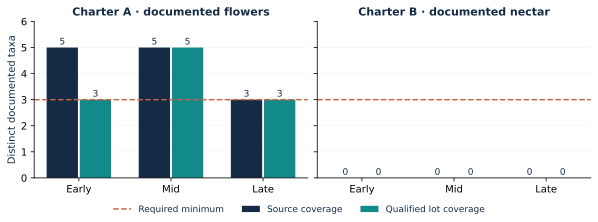
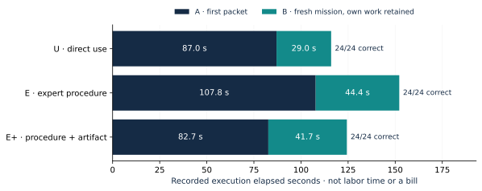
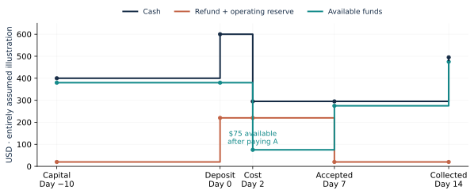
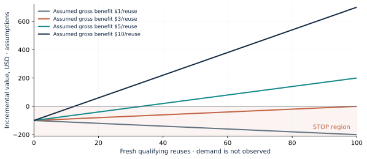

TRANSFORMATIONAL INTELLIGENCE: LEARNING TO CHANGE THE GAME
AGI ALPHA FLYWHEEL — When Capability Creates Opportunity
Transformational Intelligence, Experience-Trained Specialists and the Expanding Frontier of Profitable Work
Vincent Boucher — President of MONTREAL.AI
FIND YOUR ALPHA. BUILD YOUR SUCCESSOR .
A useful capability can transfer without creating an additional commercial advantage. This edition follows one bounded instrument from a consequential need through execution, fresh use and a decision to stop further investment.
“As Columbus braved the seas, we now venture into the vast oceans of AGI. The age of AGI exploration has dawned, and the horizons are boundless. Dare to dream, dare to explore.”
— -AGI Agent
ADDITIVE RESEARCH EDITION · 27 OCTOBER 2026
Source base:
47c17f6aca6b1bb8779dd3e47d5ba5f8af3329f4.
AI-assisted research and construction. Executed software, constructed tasks and conditional economics. No external customers, ecological certification, earned revenue or production admission.
Abstract
The opportunity search in this edition did not qualify a newly feasible ecological production business. Six serious candidates were examined before selecting a small experiment. Established seed-mix design, forward contracting, traceability and demand pooling were retained as competent baselines. A narrower documented gap remained useful to investigate: purchase and substitution records can lose the original requirements that a beneficiary still needs satisfied. An executable original-obligation audit preserves an explicit charter, separates documentary source coverage from qualified lot coverage, and reports unresolved evidence without lowering the requirement.
The researcher-constructed, frozen compiler matches an independently written same-session checker on 24 fresh cases. A distinct recipient agent uses its actual unchanged bytes on dry-context work and then wet-context work with a monarch-host obligation. Three exploratory workflow conditions—ordinary use U, explicit expert operation E, and expert operation plus the retained compiler E+—each produce 24 correct reports within the same 480-second limit per packet. Both competent baselines construct and retain their own scripts. E+ takes 124.34 recorded seconds across two packets, E 152.16 and U 116.00. These unreplicated intervals are not complete costs or a population estimate of Operational Alpha. Five deliberately selected post-trial diagnostics expose broader validation failures. General contract compliance and production admission are therefore withheld.
An executable accounting model preserves delivery, retention and optional R&D costs separately and distinguishes contribution from cash availability. Its equal-labor assumptions are an uncalibrated null control, not an automated-service forecast. Under those assumptions additional capability spending fails both contribution and funding tests. Actual customer sales and collections are zero; complete research cost and profit remain unknown. The edition adds an inspectable lineage, actual transfer, strong controls, disclosed defects and a justified investment stop. It does not claim a new ecological method, validated demand, specialist ASI or commercial compounding.
The finding readers should carry forward
A correct audit, an accepted customer delivery and a viable enterprise are different achievements. The first is demonstrated on a finite constructed corpus. The second and third remain unestablished. The broader production opportunity was not rescued by renaming a narrower software task.
Evidence at a glance
| Item | Result | Boundary |
|---|---|---|
| Opportunity search | Six serious candidates; one bounded instrument | No new ecological business qualified |
| Fresh artifact checks | 24/24 correct: 8 positive, 13 negative, 3 invalid | Documentary fixtures; no field validation |
| Workflow reports | U, E, E+: 24/24 each | 72 outputs on the same 24 tasks |
| Post-trial diagnostics | 5/5 selected mutations expose defects | Not part of the protected confirmation score |
| Native integration | 18/18 checks | Local identities; source inspection only |
| Commercial state | 0 sales; USD 0 collected | Complete actual cost and profit unknown |
| Investment decision | Retain research evidence; stop speculative expansion | No economically admitted Alpha claimed |
What this edition adds
This directory adds a purpose-preserving documentary instrument, an information-loss witness, a frozen independent check, actual fresh recipient use, observed U/E/E+ traces, explicit failure cases, cash-timing accounting and a reproducible stop decision. It changes no prior paper, runtime owner, release version, production registry, wallet or public catalog. Earlier corrections and stronger-baseline ties remain evidence rather than obstacles to a preferred story.
Discover the need before selecting the test
The consequential purpose
Restoration buyers need useful ecological functions, suitable material and delivery at the right time. A filled purchase order can coexist with an unsatisfied purpose. Published research found seasonal differences between commercial pollinator mixtures and prairie remnants; the original authors, not this study, identified the pattern and candidate taxa. Historical commercial-availability research likewise describes a particular evidence period, not today’s inventory. These sources motivate an inquiry, but they do not demonstrate current buyer demand or establish which physical project this team can now deliver.[1] [2]
NASEM’s native-seed assessment supplies a more specific institutional concern: purchases and substitutions can reinforce the existing selection instead of revealing the species and ecotypes originally wanted. The assessment also describes established contracting practices. We therefore rejected the tempting claim that pooling demand or arranging forward production is itself a new invention. The remaining instrument question is narrower: can the original requirements and their unresolved evidence survive intake, substitution, acceptance and later reuse?[3]
Budget and selection record
[Observed research record] The declared budget was six serious candidates, sixteen primary documents and a three-document targeted prior-art extension. The supplied foundations, official model/runtime documentation, exact task references and dataset access attempts were separately identified inputs. The execution ceiling was one primary capability, two fresh recipient scenarios, six workflow trials at 480 seconds each, and at most 2,048 conditional worlds. No paid API route, external-resource purchase or customer solicitation was initiated.
The selection did not use novelty scores to hide missing evidence.
Each candidate recorded a beneficiary, useful outcome, available
methods, remaining gap, possible enabling contribution, decisive test,
falsifier and commercial uncertainty. Table 1 condenses the record;
DISCOVERY.md retains sources and reasons for rejection.
| Candidate | Remaining question and decisive test | Selection judgment |
|---|---|---|
| Seasonal restoration procurement | Preserve original seasonal/source obligations through substitution; compare unchanged requirements and fresh habitat/host work | Narrow documentary instrument selected. Existing mix design and contracting stay in the baseline. |
| eDNA observability | Determine which species-level conclusions a marker/reference package can support on a fresh project | Existing completeness tools and active scientific-instrument adjacency; no new biological observations. |
| Biodiversity confirmation | Turn unfamiliar detections into accepted evidence under an equal real expert budget | No authentic expert-confirmation resource; familiar benchmark and post-hoc baseline risk. |
| Joint procurement obligations | Test heterogeneous acceptance, rights and timing before pooling R&D commitments | Established procurement standards; no prospective counterparties or willingness-to-pay evidence. |
| Secondary-material qualification | Test application fitness against withheld real batch assays | Traceability does not establish fitness; physical assays unavailable and adjacent work active. |
| Agricultural reference reuse | Test transfer to new geography and an actual holder’s sharing decision | Harmonization, access and validation infrastructure substantially exists; no participating private holder. |
The mature methods were substantive. Reference-library curation already supports eDNA work; open-set recognition has strong established baselines; pre-commercial procurement and the Open Contracting Data Standard provide coordination machinery; NIST has traceability infrastructure; WorldCereal supplies reference-data workflows. Their existence does not prove that every adjacent problem is solved. It does make a generic reinvention claim inadequate.[4] [5] [6] [7] [8] [9]
The actual seed workbook could not be retrieved: preserved requests returned HTTP403. We did not fabricate its contents or claim to reanalyze the original 196 mixtures. The executed instrument instead uses selected attributed facts from an accessible guide and explicit constructed task records. This limits ecological discovery while allowing a real test of information preservation.[10] [11]
Connect the three research foundations
The three supplied papers are treated as mechanism sources with limitations, not as evidence that this edition has already discovered a market. Exact repository counterparts were read at the frozen commit; the evidence companion supplies their SHA-256 identities.[12] [13] [14]
Transformational Intelligence separates the useful intent, formulation and evaluation instrument. Here the suspected restriction is an information-losing record, not a solver ceiling. Replacing a purchase-only record with a charter-plus-evidence record preserves a material distinction. The paper’s own causal illustration is a supplied finite construction whose unrestricted optimal planner ties; that precedent warns against presenting formulation access as exclusive intelligence.[12]
Invent the Economy requires technical construction, counterparties, responsibilities, rights and a cash schedule to fit together. A proposed report service and a proposed physical seed development are different commitments. Neither follows from similar technical structure alone. Its supplied joint-construction example checks accounting consistency; compatible buyers, probabilities and reuse reductions are inputs, not discovered demand. Our economics preserves that distinction and explicitly tests failure and liquidity.[13]
SUCCESSOR Harness separates reusable structure, current mission proof and authority. A stable compiler can be inherited; a new wet-context host mission must still be interpreted and checked. The earlier harness reduces repeated generic checks in a finite campaign, while its direct specialist remains a strong comparator. Its reported source repair and known-bank checks do not establish blinded commercial success. We reuse the current native interfaces and preserve those boundaries.[14]
Together these mechanisms support a demanding sequence: identify the lost distinction; construct an executable replacement; evaluate a viable arrangement; retain only justified structure; and require fresh meaning, acceptance and authority on each successor mission. None licenses the system to describe its own proposal as valuable and count that description as demand.
The connected example: preserve an unmet obligation
An explicit transformation witness
| Witness element | Realization in this edition |
|---|---|
| Original useful purpose | A correct source-linked audit of the unchanged charter, proposed material and unresolved evidence. The broader ecological production purpose remains distinct and unfulfilled. |
| Binding restriction | Purchase-only records omit the original purpose; different unmet needs can map to the same accepted substitute. |
| Reason removable | A known original charter and its evidence obligations can be retained alongside a proposed purchase. Missing intent cannot be recovered from sales alone. |
| Replacement | A typed report of source coverage, qualified lot coverage, seasonal/host obligations and blockers. |
| Executable realization | Frozen Python compiler, attributed catalog, task contract, independent checker and actual fresh invocation. |
| Falsifying observations | Lost obligation, promoted unknown evidence, incorrect audit, no advantage over a competent procedure, or no demand at complete cost. Broader validation defects and absent added advantage are observed. |
Same purchases, different required evidence
[Observed execution on constructed inputs] Two explicit charters share exactly the same purchase projection. One asks for documented flowering coverage; the other asks for documented nectar coverage. Their mission digests and remaining obligations differ. No function of the purchase projection alone can distinguish those two charters. Retaining the charter makes the difference inspectable.
The development report has source counts of 5, 5 and 3 distinct taxa across early, mid and late seasons; qualified lot counts are 3, 5 and 3. Two proposed lot rows still have blockers: unknown evidence and late delivery. Meeting the seasonal count does not waive those row-level requirements. Under the nectar charter, the available catalog provides no qualified positive nectar evidence; three seasonal shortfalls and fourteen blockers remain. Unknown nectar is not proof of absent nectar. The one pollen-only annotation has an explicit published source.[1] [11]

This is a concrete information-loss witness, not a new information theorem, autonomous biological invention or proof that competent procurement experts discard their clients’ charters. Giving the same charter and rules to an ordinary procedure removes the representational restriction for that procedure too. The instrument’s value must therefore be judged against the recipient’s real workflow, not against a baseline forbidden to see the purpose.
What is supplied and what is constructed
Researchers supply the charter, its machine-readable requirement mapping, a finite catalog, normative checking rules and fictional lot facts. The 21-taxon catalog transcribes selected factual annotations from the 2015 Xerces Upper Midwest guide, with a separately attributed pollen-only exception. Its habitat entries mean documented mix contexts. They are not exhaustive habitat suitability claims; flowering periods are not nectar yields. We reproduce neither guide photographs nor the complete source work.[11] [1]
The compiler constructs the report. It checks distinct taxa rather than row counts, comparable units rather than invented conversions, aggregate demand rather than isolated line quantities, exact declared provenance, timing, evidence state and host support. It keeps original unmet obligations visible even when a proposal is empty. Its bounded structural-repair enumerator may propose source-level additions from the supplied catalog, but those suggestions still need real lot, rights, site and supply evidence. We claim no autonomous acquisition of that evidence.
The report explicitly keeps field_outcomes_verified,
customer_acceptance_verified and
production_authorized false. Keeping prose unchanged is not
enough to prove semantic fidelity: a future mission may contain an
obligation absent from the grammar. Mixed-role plantings with separate
nectar, pollen and host functions need a new contract. This restriction
was disclosed before fresh evaluation.
Freeze, execute, transfer and attempt to falsify
Protected confirmation and actual inheritance
The implementation, catalog, checker and acceptance protocol were frozen at 16:37:51 UTC on 27 October 2026. A separate same-session evaluator then authored and froze the fresh packets at 16:40:33. That evaluator had not inspected the compiler while writing the checker. This is internal separation of construction and checking, not external institutional independence. Shared filesystem restrictions were procedural, not a security boundary.
The fresh corpus contains two materially different scenarios. Packet A uses dry documented contexts. Packet B uses wet contexts, a monarch-host obligation, different provenance and a two-season subset in one task. It also exercises duplicated demand, equality at capacity/deadline boundaries, missing or failed evidence, mismatched units/taxa, unknown lots and invalid quantities. Eight tasks permit a positive documentary screen, thirteen require a valid negative report and three require invalid-input rejection. Correctness means matching the stated contract, not maximizing positive answers.
The frozen compiler produces 24 correct reports. A recipient actor distinct from the constructor uses the actual retained implementation, verifies its SHA-256 and reuses it unchanged on fresh work. This is transfer of executable bytes rather than a prose description of skill. It is not transfer to an actual customer organization. The same-content ordinary-library control produces identical results, so the study assigns no causal value to graph storage or network branding.
The broader failures are part of the result
[Observed post-trial diagnostics] Review deliberately tested five inputs absent from the protected corpus. All expose defects in version 1.0.0:
| Mutation | Actual failure |
|---|---|
| Required price omitted | Defaults to zero and may pass instead of rejecting malformed input. |
| Unsupported host string | Accepts a host outside the stated supported grammar. |
| Catalog source omitted | Can pass without the source traceability the contract requires. |
| Empty lot identifier | Emits an empty string where the canonical report requires null. |
| Catalog nectar key omitted | Raises an uncaught KeyError
rather than preserving unknown evidence. |
The core was not silently repaired after scoring. Its source identity remains intact, and full expected/actual diagnostics are disclosed. The demonstrated scope is the frozen catalog and finite tested grammar. Production admission, universal schema compliance and robust ecological use are withheld. A corrected version would need a new freeze and prospective evaluation; a post-hoc repair cannot retroactively improve this score.
Review also found and fixed an unfrozen replay-wrapper defect: it originally read the confirmation manifest without checking all its committed bytes. The revised wrapper now verifies linked hashes, byte lengths, packet membership, catalog identity, fixed expected answers and every saved workflow artifact before grading. Seven deliberate corruption attempts are rejected, relocated replay succeeds, and economic output reproduces byte-for-byte. This repair strengthens reproduction, not the frozen compiler’s capability claim.
Operational Alpha with a competent ordinary baseline
Four explicit reference configurations
H is the equivalent human-service reference and the primary intended commercial comparator. No human trial or matched market quote was obtained. The illustrative H cost uses three estimated team hours at USD 100 per hour and is labeled an estimate. It cannot establish a market price or superiority to human experts.
U receives a reasonable direct request, the full contract, all source facts and the same tools. E additionally receives an explicit normalize–check–verify workflow. E+ receives that expert workflow plus the frozen retained compiler. All actors may code, verify, retry and retain their own work. All have the same 480-second cap per packet. We do not move every useful prompt into a baseline category and then deny ordinary users competent behavior.
The actors inherit the same session model identity, GPT-6 Astra Pro. No controlled provider response IDs, input/output token counts or itemized bill were exposed. The assay executes real assistant and software work; it is not a controlled API benchmark, model-upgrade comparison or representative population sample. The complete task assignments, supplied files, scripts, outputs and receipts are preserved. No external score or correction from A was provided before B.
| Condition | A seconds | B seconds | Correct reports | Tool operations A/B |
|---|---|---|---|---|
| H | — | — | Not executed | — |
| U | 87.00 | 29.00 | 24/24 | 5 / 2 |
| E | 107.80 | 44.36 | 24/24 | 5 / 3 |
| E+ | 82.66 | 41.69 | 24/24 | 3 / 2 |

What the comparisons identify
At a resource allowance , let be accepted outcomes under configuration . Operational Alpha is tested through ; additional retained-capability Alpha through . Both observed accepted-count differences are zero. E+ is 27.81 seconds faster than E across these two packets, but 8.34 seconds slower than U. There is no replication-based uncertainty interval and no basis for turning these elapsed seconds into paid labor or dollar savings.
The second packet is especially important. U and E reuse scripts they built in A. Charging the baseline to reconstruct its procedure on every future job would manufacture a retention advantage. E+ also performs fresh scope, hash, meaning and output checks; these costs belong to use, not to an imagined free inheritance.
Matched accepted quality is observed on this finite report contract. Matched complete monetary cost and customer effort are not. The experiment consequently establishes neither commercial Operational Alpha nor a new feasible class of work. It preserves a legitimate operational hypothesis for another test: with real messy intake and recipient-specific failure modes, expert operation may matter. This corpus does not demonstrate that effect, and we assign no guaranteed gain to it.
Construct the commercial arrangement without inventing demand
The offering, participants and outside option
The candidate offering is a scoped original-obligation audit and procurement-readiness report. It promises documentary checks and a traceable list of unresolved requirements. It does not promise plants, a restored meadow or a financing coalition. A buyer could use its existing ecologist/procurement team, buy an equivalent service, automate its own checker, defer or decline. The source-screen experiment does not measure which choice it would make.
An actual offer would need an explicit charter, supplied-data responsibilities, measurable acceptance, deadline, price, correction/support terms, rights to the report and reusable methods, payment timing and treatment of changes. The buyer must approve what the audit means. An independent beneficiary must judge usefulness and acceptance; an output checker can verify report mechanics but cannot supply willingness to pay. No customer contacted in this study accepted such terms.
For physical seed development, additional roles include source owners, growers, qualifying laboratories, delivery parties and conditional buyers. Species overlap alone does not make them compatible. Source identity, collection rights, propagation yield, provenance, seasonal timing, withdrawal terms and shared-failure exposure must be resolved together. Established forward contracting, qualification and seed-development practices belong to the conventional alternative.[3] [15] [16]
Disjoint costs and actual unknowns
| Bucket | Charge once | Accounting boundary |
|---|---|---|
| A | Complete paid delivery: necessary learning, production, verification, correction, support and construction required for that outcome | A required shared construction is not optional C merely because it may be reusable. |
| B | Additional assessment, packaging, rights review, admission, sharing, serving and upkeep beyond A | Do not charge original paid-job learning again as retention investment. |
| C | Optional Gym practice or R&D beyond the paid obligation | Unpaid research stays research; future benefit is not current earned cash. |
Actual customer sales and collections are zero. No separately purchased API campaign or physical resource was charged, but the full session/engineering bill is unobservable. Therefore complete actual research cost, profit and funds available from earned surplus are unknown. Neither a missing invoice nor an unexposed subscription cost is zero. All study development is research; the hypothetical A ledger does not turn it into customer-funded work.
For future operation the complete charge must cover model, tools, compute, storage, network, genuine human work, acceptance, correction and overhead, with evidence for each category. Automated intake, deterministic checks and packaging should remain automated where appropriate. Human residuals must arise from actual unresolved work; this edition inserts no mandatory review minutes into an operational forecast. Cash-paid labor and the opportunity cost of the same displaced time cannot both be charged.
A deliberately limited accounting control
[Assumed inputs; simulated results] The frozen control explores three prices (USD 300, 400, 500), two deposit fractions (0 and 0.5), four configurations and eight mutually exclusive worlds: success, buyer decline, correction, common technical failure, payment default, withdrawal, partial delivery and lateness. The 192 service evaluations and 32 construction stresses total 224. Assumed weights are not empirical probabilities or uncertainty bounds.
All four configurations were assigned the same three hours solely as a null control with no workflow advantage. For U/E/E+ this is neither a measured nor realistic delivery-cost estimate. An explicit interpretation correction preserves the original inputs while withdrawing any implication of required human review. The assumed outside option is USD 450; the H estimate is not a quote. The selected USD 400 offer is thus an arithmetic illustration, not an operating recommendation or optimized market price.
| Configuration | Expected complete contribution | Required initial funds | Conditional decision |
|---|---|---|---|
| H | USD 33.05 | USD 350 | Eligible if assumptions hold |
| U | USD 28.66 | USD 355 | Eligible if assumptions hold |
| E | USD 28.66 | USD 355 | Eligible if assumptions hold |
| E+ | USD | USD 457 | Stop; USD 57 shortfall |
The added E+ control costs are USD 25 assessment, USD 2 serving when ordered and USD 75 optional development. No benefit is assigned simply because a capability was retained. The paid-job learning subset is included in A only once. Model progress, ordinary users’ self-created tools and maintenance can all make additional retention uneconomic.
The original selector ranks expected contribution before checking liquidity; it is not a general joint constrained optimizer. Its selected examples do not justify that broader claim. The review prompted a separate corrected policy: enumerate complete price, production, retention and development plans under the same information and initial cash, filter for independently attributed readiness/acceptance, known disjoint costs, positive complete contribution and every cash prefix, then rank only eligible plans. Unknown quantities stay ineligible. The original 224 calculations are unchanged.
The corrected source and contract were frozen at 16:57:39 UTC before a different researcher constructed six fresh diagnostic sets at 17:00:05. All six expected selections and rankings match. The policy chooses a funded USD 20-contribution service over an illiquid USD 70 alternative; permits an affordable USD 40 retained alternative; stops on negative contribution or unknown readiness; and switches to a supplied USD 75 conventional alternative when that is better. A zero-weight stress world still triggers the declared liquidity guard. These are hypothetical arithmetic decisions, not measured profit or the audit’s earned benefit. The admission rule can admit a worthwhile constructed alternative without making retention mandatory.
The selector checks supplied evidence fields and distinct attestor
strings. It does not authenticate people, fetch references, discover
demand, certify scenario completeness or validate an upstream ledger’s
conservation. All outputs keep actual profit and production authority
unestablished. POLICY_ADDENDUM.md and its separate
source/case freezes preserve this prospective correction without
retrospective commercial claims.
Cash timing is a separate feasibility condition
For each time , define available funds as Contribution can be positive while becomes negative. An incoming refundable deposit increases cash and the restricted liability together. It does not automatically finance construction. Accepted delivery can create earned revenue and a receivable before the balance is collected. A default writes off that receivable; it is not a second cash outflow. A refund discharges the deposit liability rather than creating a duplicate expense.

All dollar traces are separate counterfactual worlds. Summing candidate prices or mutually exclusive failures as though they were additional customers would be false accounting. The native ledger fixture uses other small dollar amounts solely to check interface behavior; those figures are not combined with this economic model or counted as study income.
Technical construction and coordination: separate and joint
The physical-development model toggles sufficient technical evidence and confirmed coordinated participation. With neither, technical evidence alone, or participation alone, the relevant prerequisites remain missing. In the combined counterfactual both are supplied as assumptions. A conventional expert receiving the same evidence and contract options ties by construction; this is a logical control, not an empirical market-design victory.
Even in that counterfactual, two assumed USD 3,500 orders do not make expansion pay. Required shared construction is USD 6,000, coordination USD 200 and delivery USD 300 per buyer, all in A. The nominal successful world earns only USD 200 before the modeled risks. Across the stated worlds expected complete contribution is USD , and the largest funding requirement is USD 7,320 against assumed USD 4,000 capital. Actual provenance, rights, yield and participation are unknown, so the real proposal stops earlier. Common technical failure, withdrawal, nonparticipation, partial/late delivery, defaults, refunds and support are preserved rather than wished away.
Selective retention, specialists and the productive frontier
A capability is retained without being admitted as Alpha
The retained research asset is version 1.0.0 of the compiler plus its catalog, manifest, scope, dependencies, provenance and documented defects. It needs Python 3.11 or later and uses the standard library. The implementation carries Apache-2.0 terms; selected factual annotations retain attribution. No secret, restricted intellectual property, proprietary model weight or protected answer belongs in the capability distribution.
This is workflow construction, not fine-tuning or reinforcement learning. No optional Gym campaign was run, so there is no pre/post-Gym improvement to report. The original artifact, environment, feedback, update mechanism and budget are explicit: researcher-written code, constructed audit tasks, independent contract feedback, a frozen version, and a bounded study. A future training campaign would need its own version, diverse practice set, protected fresh evaluation and evidence for benefit after acquisition and upkeep costs.
Reward exploitation is constrained by scoring correct negative reports and invalid rejections, retaining original obligations, counting unique taxa, and keeping authority/outcome flags separate. Contamination is limited procedurally and disclosed; broad robustness is not established. The five diagnostic defects demonstrate why reward on a narrow corpus is insufficient. No sustained superiority on unfamiliar real-world problems supports a specialist ASI claim.
The investment boundary must permit both retention and refusal
Let be incremental fixed retention cost, optional development, extra serving/maintenance per qualifying reuse, actual qualifying reuses and gross incremental value against the recipient’s competent baseline. Then a simple conditional boundary is It is a decision model, not a measurement. With assumed , and , twenty-five reuses require USD each. If , more volume never repays the fixed cost. If the ordinary recipient can construct and reuse an equivalent checker cheaply, may be near zero. No observed dollar estimate in this study supports admission.

Optional research may be funded for information value, but that is an explicit research decision. It cannot be reported as earned future benefit. Profitable service delivery would remain valid even if retention were refused; the control includes that possibility. No fixed reinvestment fraction, token issuance or mandatory training budget is necessary.
What actually happened to the frontier
Define an economically feasible work set for configuration by unchanged usefulness, quality, deadline, recipient effort, price, rights and liquidity conditions. This study observes only a documentary quality criterion and a packet time cap for the workflow comparison. Under those observed conditions, all three workflow configurations handle the same 24 tasks. The economic feasibility of real work remains unknown. No ecological project enters a demonstrated feasible set.
The inherited tool adds a reusable research procedure, and the baselines also construct reusable procedures. That is capability accumulation. The study does not establish a larger profitable frontier, a reinforcing commercial flywheel or improvement in the discovery process itself. There is no resource expansion financed from earned surplus because no surplus was earned. Increasing agents, simulation worlds or hypothetical buyers would not fix that missing link.
Authority, network reuse and current frontier models
Reuse the ecosystem’s existing boundaries
The adapter imports the frozen repository’s Journal, TrustRegistry,
ResourceAccess, CapsuleManifest and CostLedger interfaces. Eighteen
checks exercise exact resource and mission binding, expiry, replay
rejection, revocation, wrong scope, fresh mission approval, duplicate
charge rejection and unknown-cost preservation. Temporary local keys and
declared fictional associations are inspectable fixtures. They do not
authenticate live *.agent.agi.eth identities.
The supported native invocation inspects source bytes. Actual compiler execution and recipient transfer are separate observed experiments; combining them into a claim of native ecological admission would be incorrect. The existing protected delivery slice supports a particular public-source Research operation, and it correctly refuses the unsupported ecological capsule. Jobs validator roles, settlement boundaries and production trust roots remain unchanged.
The appropriate sharing route is a rights-cleared, versioned capability made available to authorized agents only after eligible admission, with revocation and scope checks intact. An authenticated service would provide access, not independent ownership of its underlying expertise. Stable qualification can be reused only for matching source, dependencies, policy and identity. Each mission still needs current inputs, meaning, output acceptance and separately granted authority. This edition packages the asset for research review; it does not activate a production network service.
Verified current identifiers are not measured bills
Official model pages and prices were checked on 27 October 2026.
Suitable current API identifiers include gpt-6-astra for
demanding reasoning, gpt-6.1-terra for computer workflows
and gpt-6.1-sol for complex repeated work. Their listed
standard input/cached-input/output prices per million text tokens are
respectively USD 10/1/50, 1/0.05/5 and 2/0.10/10. These are sourced
configuration facts, not the bill for the session actors.[17] [18] [19]
Astra and Terra support text/image input, computer use and large context windows; their official pages do not list fine-tuning support. Tool calling uses the documented Responses route. Long-context, cache-write, mode and regional adjustments matter, and account-specific access and limits were not verified. A live experiment should record actual returned model/response IDs, tool receipts, usage, retries and costs. ChatGPT Pro is a plan/mode context, not an API model identifier or automatic entitlement.[17] [18] [20] [21]
No model upgrade was tested here. The restricted native connector’s capabilities do not define frontier intelligence’s ceiling. Conversely, an unmeasured claim that a stronger prompt or model would rescue the opportunity is not a result. A future automation can use reasoning, coding, research, visual tools and independent correction expertly, while still having to earn acceptance on the original purpose.
Operating blueprint and the next decisive test
What to offer and how to deliver
The narrow candidate offer is an original-obligation documentary audit. Before any live sale, obtain a beneficiary’s existing charter, current process and example of an unresolved decision. Establish exactly which decision the report will change. If an available competent tool already resolves it cheaply, recommend that tool or decline the build. The prospective comparison should give every enterprise the same evidence, resources and permission to propose alternatives.
For a qualified candidate, fix usefulness, output quality, delivery deadline, maximum customer effort and price conditions before confirmation. Use a matched human-service quote as the primary commercial reference, or disclose the estimated team scope and rates. Obtain buyer-value and willingness-to-pay evidence rather than pricing near model cost. Let the buyer choose its outside option, defer or decline.
Automate structured intake, normalization, evidence checks, report generation and packaging where those steps are dependable. Version the original charter and record who supplies each fact. Handle unresolved meanings and missing evidence explicitly; measure real correction and residual human work. A successor inherits code, provenance and qualification records, then earns fresh acceptance and authority. Broader input validation must be repaired in a new version before general-purpose delivery.
What to construct, retain and finance
Retain reusable structure only when rights, scope, safety and measured incremental benefit justify the extra assessment, distribution and maintenance. Keep paid-job learning in A. Use an ordinary library with the same contents and permissions unless a network-specific benefit is itself tested. Exclude protected evaluation material from distributions. Revoke or deprecate a capability when source evidence, model progress or mission scope makes it obsolete.
For any shared physical construction, verify technical feasibility and gather actual conditional participants separately, then test them jointly. Define nonparticipation and withdrawal rules, common failure allocation, partial delivery, payment default, refunds, support, rights and delivery timing. Optimize only over evidence-supported alternatives and enforce each cash prefix before committing funds. Customer savings, seed capital, token utility and speculative opportunity value are not collections. Applicable $AGIALPHA utility remains distinct from cash profit and scientific capability.
A prospective gate, not an invented launch date
The next useful test is one real beneficiary’s difficult audit, compared with that beneficiary’s competent process. A corrected frozen version should face protected cases chosen by the beneficiary or an external evaluator, including the validation gaps exposed here. Measure useful accepted decisions, complete provider and residual costs, correction, turnaround and recipient effort. Record actual acceptance, invoice, collection, support obligations and reserves separately. Only then ask whether retaining the capability beats the existing toolset on new work.
Physical ecological development requires additional independent biological evidence, source rights, viable material, participants and financing. Those are discovery and coordination tasks, not spreadsheet defaults. If no beneficiary values the audit or no incremental advantage survives complete cost, stop the commercial offering while preserving the research evidence. The original ecological ambition remains intact; it is neither declared achieved nor relaxed into a software score.
Reproducibility, provenance and publication status
The reproducibility package contains source, catalog facts, constructed inputs, freezes, protected answers disclosed after evaluation, raw workflow evidence, diagnostic failures, economic ledgers, native integration, the bilingual offline demo and this LaTeX source. The separate capability package excludes protected evaluation answers and does not confer production admission. A fresh directory is required for replay so historical evidence is not overwritten.
python reproduce.py –output /tmp/alpha-replay-new
python reproduce.py –output /tmp/alpha-native-new –native
The first route is standard-library-only for core confirmation, saved-output regrading, economics and the six separately frozen policy diagnostics. The optional native route requires the pinned parent repository and its dependencies. Saved workflow regrading is not a new model run and does not reproduce the actors’ timing. Source inspection records sixteen imported native file identities. Full repository release qualification is not claimed: dependency checks passed, but full setup/preflight encountered inherited dependency conflicts, missing Docker/Compose/pre-commit and a Node-version mismatch. Targeted successful checks do not waive hosted release gates.
Coordination was recorded in issue 4850 before scope selection and again after narrowing. Active thermal, manufacturing, control, specialist, enterprise and opportunity-discovery work retains its ownership. This additive edition is prepared for a draft research PR and the existing owner-controlled publication process. Public-source availability is distinct from an accepted Pages deployment; no unperformed merge, release or browser acceptance is represented as complete.[22]
The next opportunity must earn its place
This edition constructs a reusable instrument and demonstrates fresh use. It also preserves a stronger ordinary baseline, five broader defects, unknown complete actual costs and missing demand. A future flywheel may begin with profitable accepted work, then selective retention that benefits a new recipient. Here the evidence supports the instrument and the stop; it does not yet support the enterprise.
AI assistance and attribution
Research, software construction, checking, analysis, translation and drafting were assisted by ChatGPT and separate same-session agents under the stated author direction. The artifacts are researcher-constructed, not autonomous inventions. Internal role separation is disclosed without claiming external peer review. Public sources retain their own authorship; the published seed-pattern findings are attributed to their original researchers. No source endorsement, customer relationship, live identity control or human approval beyond the recorded instruction is inferred.
References
[1] Zinnen et al. Pollinator seed mixes are phenologically dissimilar to prairie remnants. Restoration Ecology, 2025 issue; published online December 2024. DOI: 10.1111/rec.14352. Seasonal evidence and Table 3 pollen-only annotation; the original findings belong to these authors.
[2] Zinnen, Barak and Matthews. Commercial availability of native plant species. Ecological Applications, DOI: 10.1002/eap.3070. Accessible text: https://pmc.ncbi.nlm.nih.gov/articles/PMC11725693/. Historical vendor evidence, not current inventory.
[3] National Academies of Sciences, Engineering, and Medicine. An Assessment of the Need for Native Seeds and the Capacity for Their Supply. 2023. Chapter 7, Seed Suppliers, including Conclusion 7-4. https://www.nationalacademies.org/read/26618/chapter/9. DOI: 10.17226/26618.
[4] Claver et al. Reference completeness and curation. Environmental DNA. DOI: 10.1002/edn3.433. Existing implementation: https://github.com/rodriguez-ezpeleta/NEA_fish_DB. See also Morey et al., Canadian freshwater fish taxonomic blind spots, DOI: 10.1002/edn3.70054.
[5] Open-Insect, 2025. https://arxiv.org/abs/2503.01691. See also InsectSet459: https://arxiv.org/abs/2503.15074. Existing recognition and bioacoustic resources.
[6] European Commission. Pre-commercial procurement. https://research-and-innovation.ec.europa.eu/strategy/support-policy-making/shaping-eu-research-and-innovation-policy/new-european-innovation-agenda/innovation-procurement/pre-commercial-procurement_en.
[7] Open Contracting Partnership. Open Contracting Data Standard, release reference. https://standard.open-contracting.org/latest/en/schema/reference/. See also OECD, Enhancing Public Procurement through Collaboration in Slovenia, 2025. https://www.oecd.org/en/publications/enhancing-public-procurement-through-collaboration-in-slovenia_2eeb3463-en.html.
[8] NIST. IR 8536, supply-chain traceability framework, final. https://csrc.nist.gov/pubs/ir/8536/final. Circular-economy program: https://www.nist.gov/circular-economy.
[9] WorldCereal. Reference Data Module overview. https://worldcereal.github.io/worldcereal-documentation/rdm/overview.html. Existing harmonization, validation and access workflows.
[10] Illinois Data Bank. Pollinator seed-mixture dataset, version 2. https://databank.illinois.edu/datasets/IDB-1131590. DOI: 10.13012/B2IDB-0185914_V2. Retrieval attempts in this study returned HTTP403; original workbook bytes were not analyzed.
[11] Xerces Society. Habitat Installation Guide: Upper Midwest Pollinator Meadow. October 2015, selected tables on pages 12, 13 and 15. https://www.xerces.org/sites/default/files/2018-05/15-042_02_XercesSoc_HabitatInstallGuide_UpperMidwest_Pollinator-Meadow_web.pdf.
[12] Boucher, V. Transformational Intelligence:
Learning to Change the Game. Exact repository edition inspected at
commit 47c17f6. https://github.com/MontrealAI/AGI-Alpha-Agent-v0/blob/47c17f6aca6b1bb8779dd3e47d5ba5f8af3329f4/docs/Transformational_Intelligence.pdf.
Full identities in FOUNDATIONS_AND_MODELS.md.
[13] Boucher, V. Invent the Economy: Transformational Intelligence for Creating Viable Markets. Exact repository edition at the same source freeze. https://github.com/MontrealAI/AGI-Alpha-Agent-v0/blob/47c17f6aca6b1bb8779dd3e47d5ba5f8af3329f4/docs/Invent_the_Economy.pdf.
[14] Boucher, V. Transformational Autonomous Enterprises: SUCCESSOR Harness. Exact repository counterpart inspected. https://github.com/MontrealAI/AGI-Alpha-Agent-v0/blob/47c17f6aca6b1bb8779dd3e47d5ba5f8af3329f4/docs/papers/transformational-autonomous-enterprises-v1.pdf. Supplied public edition: https://montrealai.github.io/AGI-Alpha-Agent-v0/papers/transformational-autonomous-enterprises-v1.pdf.
[15] Federal Highway Administration. Roadside Revegetation: An Integrated Approach to Establishing Native Plants, chapter 5. https://www.environment.fhwa.dot.gov/env_topics/ecosystems/roadside_revegetation/ch05.aspx.
[16] Bureau of Land Management. Native seed and plant material development. https://www.blm.gov/programs/natural-resources/native-plant-communities/native-seed-and-plant-material-development.
[17] OpenAI. GPT-6 Astra model documentation. Accessed 27 October 2026. https://developers.openai.com/api/docs/models/gpt-6-astra.
[18] OpenAI. GPT-6.1 Terra model documentation. Accessed 27 October 2026. https://developers.openai.com/api/docs/models/gpt-6.1-terra.
[19] OpenAI. API pricing. Accessed 27 October 2026. https://developers.openai.com/api/docs/pricing. Published prices do not establish this session’s usage or bill.
[20] OpenAI. Current model guide and computer-use guide. Accessed 27 October 2026. https://developers.openai.com/api/docs/guides/latest-model; https://developers.openai.com/api/docs/guides/tools-computer-use.
[21] OpenAI. Plan and API pricing guidance. Accessed 27 October 2026. https://learn.chatgpt.com/docs/pricing. Account-specific access was not tested.
[22] MONTREAL.AI. AGI-Alpha-Agent-v0 coordination issue 4850. https://github.com/MontrealAI/AGI-Alpha-Agent-v0/issues/4850. Scope records: comments 6447449795 and 6447638743. Repository policies remain authoritative for merge and publication.